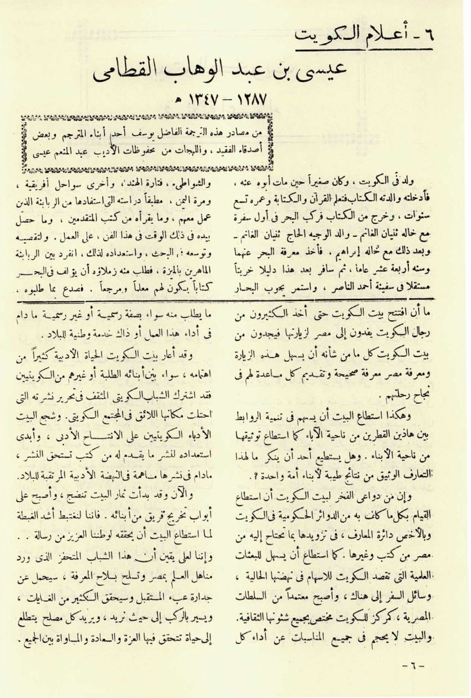
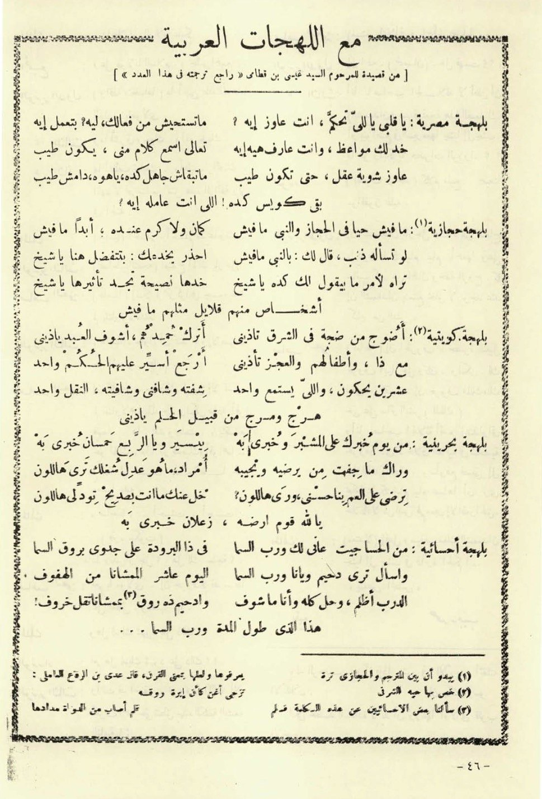
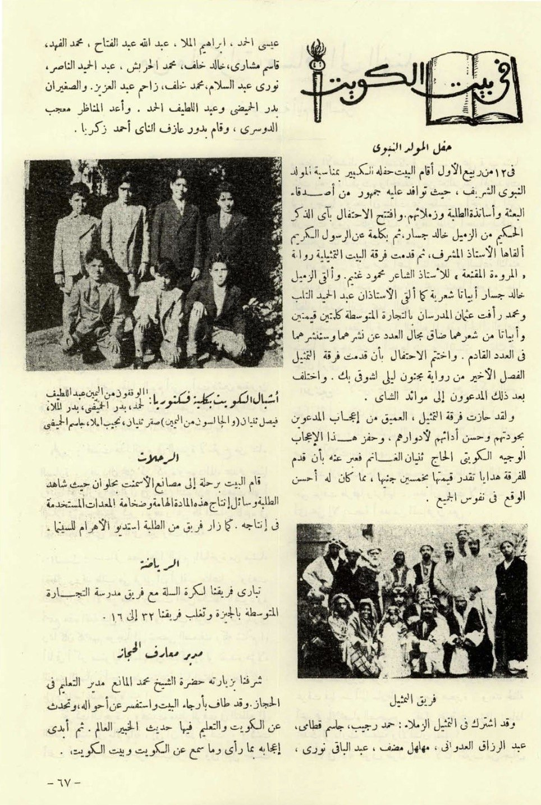
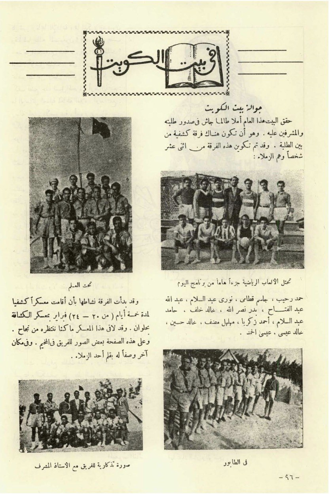
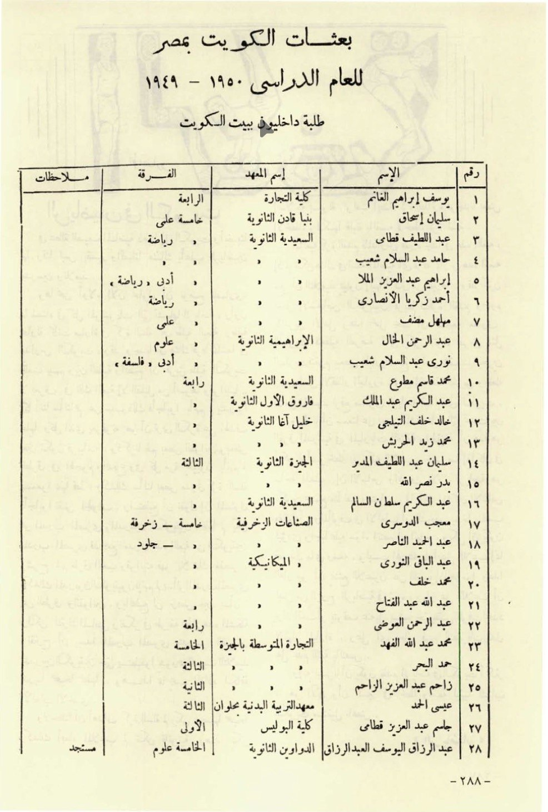
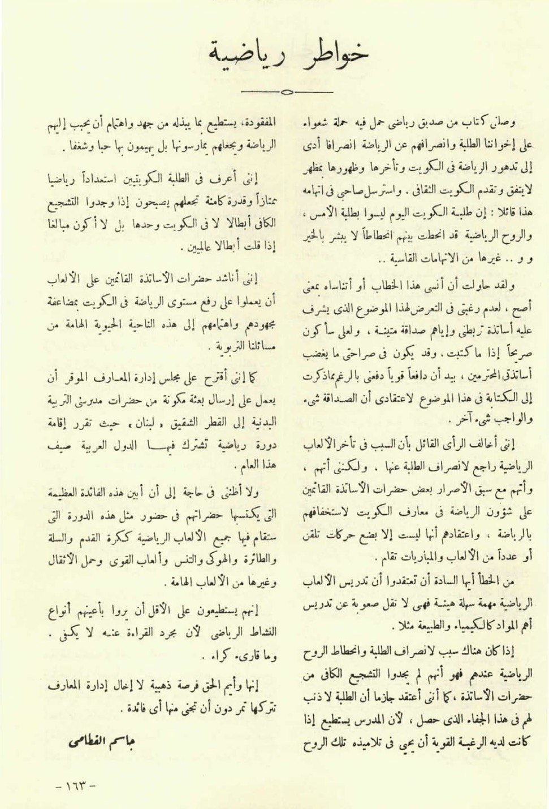
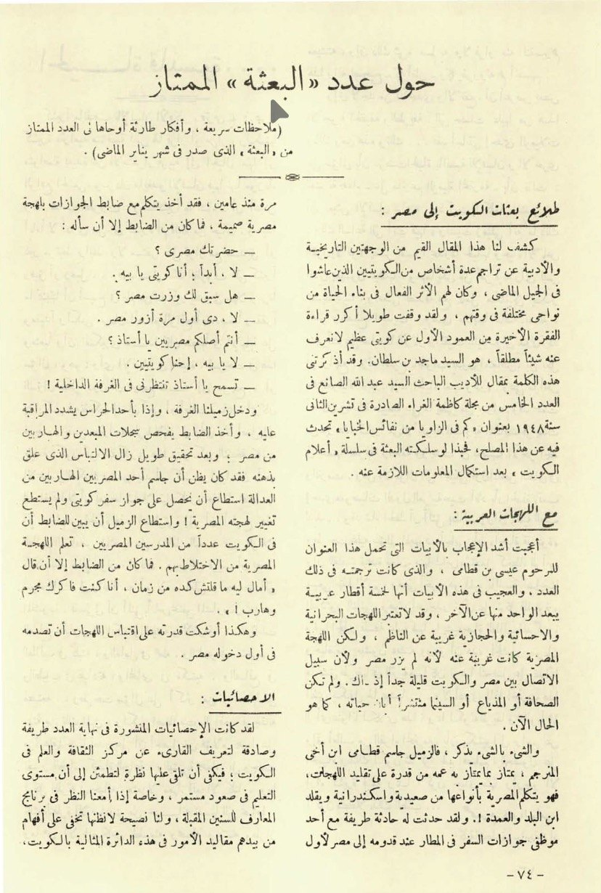
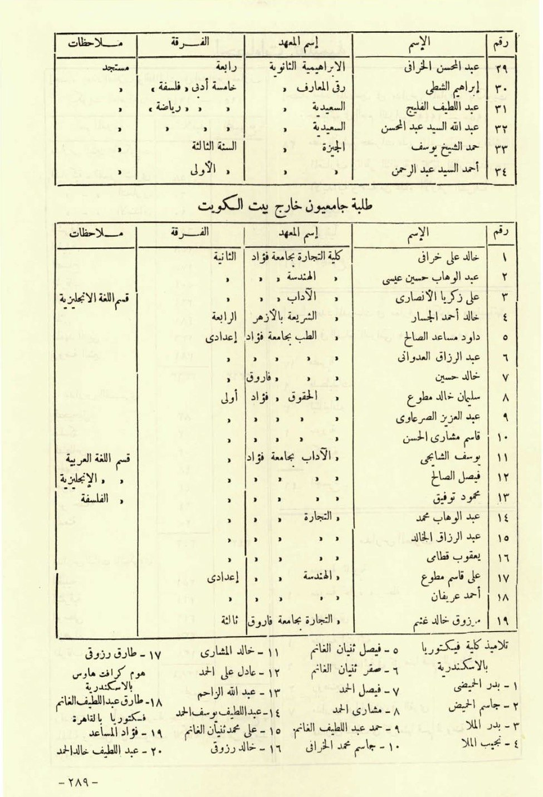

١٩٤٩، البعثة المجلد الثالث (أعيد طبعه ١٩٩٧) · صفحات من مجلة البعثة، النشرة الثقافية الشهرية التي يصدرها بيت الكويت بمصر، المجلد الثالث، جمعها وأعاد طباعتها مركز البحوث والدراسات الكويتية، ١٩٩٧
البعثة ١٩٤٩: أبيات عيسى باللهجات، وجاسم ويعقوب وعبداللطيف طلبة في مصر
ما هي
وتقدم الصفحتان ٦ و٧ «أعلام الكويت ٦» ترجمة عيسى بن عبدالوهاب القطامي (١٢٨٧ إلى ١٣٤٧هـ)، ومن مصادرها ابنه يوسف المترجم وبعض أصدقاء الفقيد، واللهجات من محفوظات الأديب عبدالمنعم عيسى. ولد في الكويت ومات أبوه وهو صغير، فأدخلته والدته الكتاب، وخرج في التاسعة في أول سفرة مع خاله ثنيان الغانم والد الوجيه الحاج ثنيان الغانم، ثم مع خاله الحاج إبراهيم، فأخذ عنهما معرفة البحر أربعة عشر عاما، ثم سافر دليلا مستقلا في سفينة أحمد الناصر، وجاب سواحل أفريقيا والهند واليمن. وطلب منه زملاؤه أن يؤلف كتابا فصنع «دليل المحتار في علم البحار» الذي «ما يزال ولن يزال المرجع لكل ربان عربي». ويذكر المقال خفة ظله ومروءته، وموقفه في حادثة قتل سيف بن سيف الرومي: فهو الذي أهاب بعم القتيل شملان آل سيف أن يسفّر سفينته لطلب الجناة وتزعم من استقلها، ودفع أخاه عبدالعزيز للذهاب بالباخرة إلى بندر لنجة حيث قبض على الجناة. ويختم بأبياته «لو علوني هالي في مصر أو بيروت» ويذكر أنه توفي في مسقط سنة ١٣٤٧هـ. تنشر الصفحة ٤٦ قصيدة للمرحوم عيسى بن قطامي بخمس لهجات: المصرية والحجازية والكويتية والبحرينية والأحسائية. وتثني عليها الصفحة ٧٤ وتذكر أن «الزميل جاسم قطامي ابن أخي المترجم» يمتاز بقدرته على تقليد اللهجات المصرية. وتنشر الصفحة ١٣٤ نماذج أخرى من أبيات عيسى باللهجات أرسلها الأديب عبدالمنعم عيسى السالم. الصفحة ٦٧: جاسم قطامي في فرقة التمثيل ببيت الكويت في حفل المولد النبوي. الصفحة ٢١٢: عبداللطيف القطامي يغادر إلى البصرة في الصيف. الصفحة ٢٤٨: جاسم قطامي يغادر إلى الكويت في الصيف، ويلقي كلمة في حفل توديع المشرف. الصفحتان ٢٨٨ و٢٨٩، بعثات الكويت بمصر للعام الدراسي ١٩٤٩ إلى ١٩٥٠: عبداللطيف قطامي في السعيدية الثانوية، الخامسة علمي، وجاسم عبدالعزيز قطامي في كلية البوليس، الأولى، ويعقوب قطامي في كلية التجارة بجامعة فؤاد الأول. وتختم الصفحة ٤١ مقال جاسم عبدالعزيز القطامي «يوم الجمعة في بيت الكويت». وتعلن الصفحة ٩٦ تكوين فرقة جوالة بيت الكويت من اثني عشر طالبا بينهم جاسم قطامي، ومعسكرها الأول في حلوان من ٢٠ إلى ٢٤ فبراير، وتختم الصفحة ٩٩ وصف جاسم عبدالعزيز قطامي لهذا المعسكر. وتذكر الصفحة ١٥١ أن «الزميل جاسم قطامي» تفوق في الألعاب الرياضية التي تقيمها الوزارة كل عام بين مدارسها الثانوية، فنال ميدالية بطولة كرة السلة وميدالية الكرة الطائرة وميدالية التحكيم لمنطقة القاهرة الجنوبية، ومنح شهادة تقدير على روحه الرياضية وساعة جميلة من المدرسة الإبراهيمية. والصفحة ١٦٣ مقاله «خواطر رياضية».
أهميتها
سجل معاصر لموهبة عيسى في اللهجات، ولثلاثة من شباب العائلة يدرسون في مصر.
صور الصفحات
















ملاحظات
ترجمة عيسى في عدد ١ يناير ١٩٤٩ (الصفحتان ٦ و٧) مدرجة مستقلة في أخباره. وتذكر البعثة وفاته سنة ١٣٤٧هـ، ومن مصادرها ابنه يوسف، ويذكر الزركلي سنة ١٣٤٨هـ، وكلتاهما في سنة ١٩٢٩.
أسماء أخرى
المصادر
البعثة، المجلد الثالث (١٩٤٩)، إعادة طباعة مركز البحوث والدراسات الكويتية، ١٩٩٧
كيف كُتب هذا النص: مصورة من المجلد المعاد طبعه.
افتح في الموقع التفاعلي